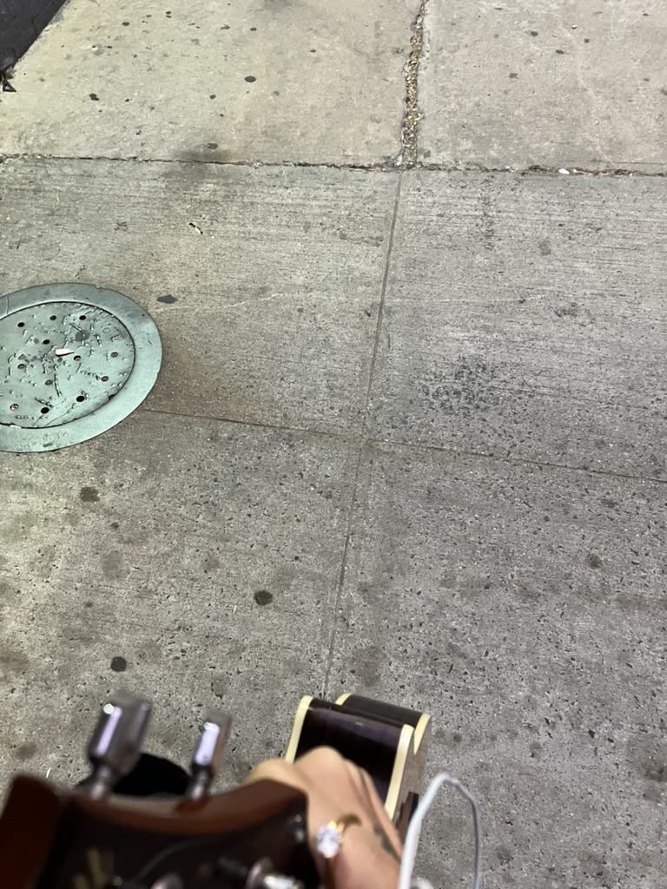

Contact
We’re hiding behind walls. Let’s feel through them together.
I use aphorisms, axioms, and color to help you read your data as feedback.
Describe your relationship to your body and world.
I won’t ask you to justify or explain harm done to you. You can be vague or code your language.
When you make a consultation request, I will send you my Pluriverse Journal so you can describe your relationship to your body and your world.

My practice is rare in tech: I mix fields to meet the human issues mainstream design leaves out.
La Matriz is an integrating response to the witnesses that don’t find me legible.
Find me on my socials, or email me!